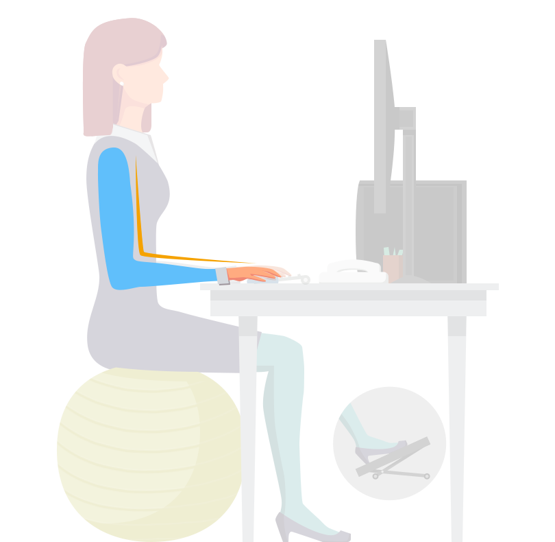

- Pieds parallèles, posés au sol ou sur un marche pied
- Genoux à hauteur et à largeur de bassin, formant un angle à 90°
- Fesses tirées vers l’arrière, et relevées
- Cambrez légèrement le bas du dos
- Coudes pliés à 90° et avant-bras parallèles au sol
- Montez/bombez le torse/la poitrine et serrez le bas des omoplates
- Gardez la tête dans l’axe du dos, la tête ne doit pas être projetée en avant, le menton doit rester à l’horizontale
- Gardez le poignet droit lors du déplacement de la souris en utilisant tout le bras à partir de l'épaule